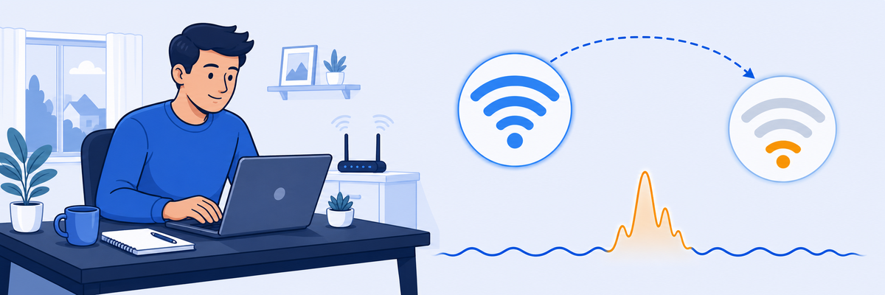
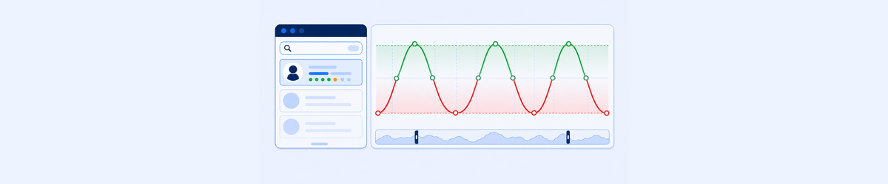
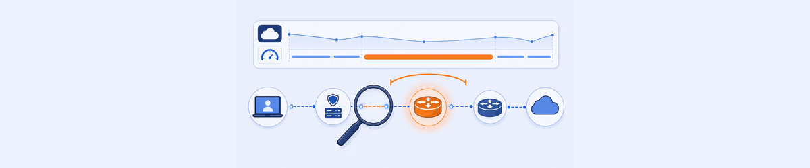
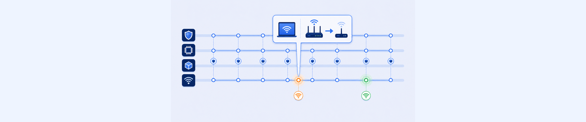

Lab 2: Troubleshooting Poor Wifi
Scenario: User Curtis Hardwick (Device: PC-Curtis-WiFi) reports frequent disconnections and difficulty completing work tasks. Initial indications suggest Wifi issues. Use ZDX to confirm the root cause.

Poor Wifi is the most common ZDX root cause. The challenge is that users experience it as "slow internet" without realising their device has silently roamed to a weaker access point.
- The ZDX Score fluctuates between Good and Poor every few hours. What does this oscillation pattern suggest about the root cause compared to a score that is consistently Poor?
- The Y-Engine lists Suboptimal Wifi at 8.33% confidence alongside Low Wifi Signal at 91.67%. Should you act on a low-confidence factor? Under what circumstances?
- If the Client-Egress latency is 319ms but the Wifi signal strength looks fine in the Device Events data, what else would you check to explain the latency?
Task 2.1: View User ZDX Score for an Application
1 Find Curtis Hardwick and Confirm the Issue
- From the left menu, click Search (User Search).
- Type
Curtis Hardwickand click on the user’s name in the results. - Select the time period 48 Hours and an application (e.g. Salesforce Lightning).
- View the ZDX Score Over Time graph and observe that it fluctuates frequently between Good and Poor.
Note: Your results will differ from the screenshots. Traffic in the lab is simulated — use the screenshots as a navigation guide, not an exact match.

Task 2.2: Analyze Poor ZDX Score Interval
2 Use Y-Engine to Identify Root Cause Factors
- In the ZDX Score Over Time graph, click and drag to zoom in on a period including a Poor score.
- Click on a data point with a Poor ZDX Score.
- Click Analyze Score and wait a few seconds for the analysis to complete.
- Review the The following factors that might have impacted the ZDX score table. Note the top factor and its Confidence Level.
Result: In this example, the top factor is Low Wifi Signal (91.67% confidence) followed by Suboptimal Wifi (SSID: 3Com_Wifi, channel 1, type 802.11n).
Y-Engine analysis requires at least one complete probe cycle in the selected interval. If you see "Insufficient data" or an empty factors table: (1) Try zooming in on a longer Poor-score period — a single data point may not have enough probe history. (2) Select a different application — some applications may have fewer probes configured. (3) Verify the time range includes at least 15–30 minutes of Poor score (not just a single point). Since this is a shared read-only environment, data is pre-populated — your view may differ slightly from the screenshots.
Task 2.3: Compare Poor ZDX Score to Last Known Good Score
3 Use ZDX Score Comparison to Identify Key Differences
- Click Compare to for the selected Poor score point and select Last known good score.
- Examine the Analyzed Point and Comparison Point side by side.
- In the Key Differences table, note the differences in:
- ZDX Score
- WiFi identifier (SSID/BSSID)
- Client-Egress Latency
Task 2.4: Isolate High Latency Hop
4 Locate the High Latency Link in the Cloud Path
- Click the ← Compare ZDX Scores link to return to the user report.
- Zoom in on a period containing a Poor ZDX Score in the graph.
- Scroll down to view the Cloud Path section and note which leg has the highest latency.
- Examine the Hop View below the graph. The highest-latency link is highlighted in orange (differential).
Result: In this example, the Client-Egress latency is 319ms — the hop between the client device and its local gateway accounts for most of the end-to-end delay, confirming a local Wifi problem.

Task 2.5: View User Device Events Associated With ZDX Score Changes
5 Correlate SSID Change to Score Transition
- Scroll to the bottom of the user report to view the User Device Events timeline plots.
- Mouse-over the dot on the Network timeline at the time when the ZDX Score transitioned to Poor.
- Scroll through the Network Interface data in the popup to find the event with a value in the New Value field.
- Mouse-over the dot corresponding to when the score transitioned back to Good and note the SSID change.
Result: The SSID Change from Google_Nest to 3Com_Wifi is associated with the Poor score. Switching back to Google_Nest restores Good performance.
